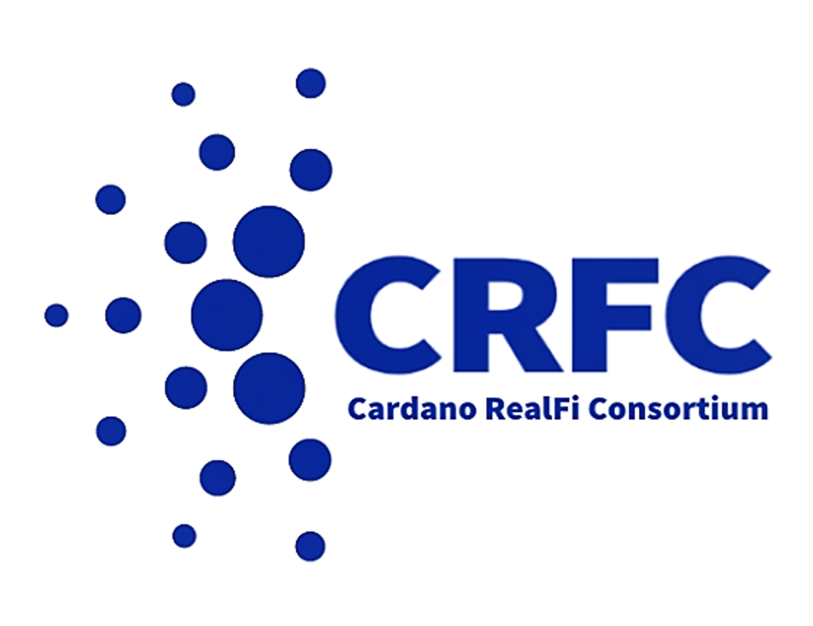

We are projects with real world utility
We create value and trust by connecting real world assets and processes to Cardano blockchain transactions and tokens.
Many of our projects include a DeFi, identity, or ESG impact component.
The Consortium was founded at the Cardano Summit in November 2022 which included a speaker panel session about Cardano RealFi.
We carry out day-to-day discussion and planning on Discord.